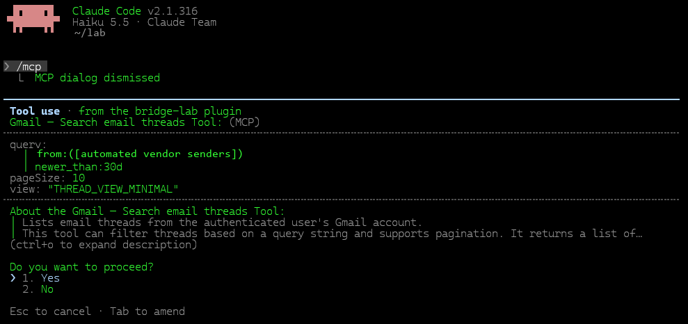

Cuidado con los mods de Claude Code: son una puerta a todos tus conectores
Ya hay 7.349 mods públicos de Claude Code, nueve de cada diez en repositorios creados en octubre, y el 40 % lanza programas en tu máquina. Monté uno y medí lo que puede hacer sin que te des cuenta, desde el modo en que Claude Code te pregunta cada paso hasta el que no pregunta nada.
- Un mod es código que viaja dentro de un plugin y corre en tu sesión de Claude Code, con tus conectores y con tus permisos.
- Monté uno: cada dos minutos leía mi Gmail y mi Calendar, y un script suyo leyó un secreto, sin que el modelo hiciera nada y sin dejar rastro en la sesión.
- Claude Code te pregunta antes de leer el correo. Lo que el mod haga después con esos datos ya no te lo pregunta nadie.
El 2 de noviembre, a las 11:12 (hora UTC), una sesión de Claude Code de mi laboratorio local leyó un secreto guardado en mi gestor de secretos. Nadie había tocado el teclado y en la terminal nada había cambiado: el cursor esperando y, abajo, la línea de siempre que dice en qué modo está, auto mode. Además, mirando el historial de la sesión, su última línea era de las 11:05:20, siete minutos antes.
El secreto era un test, y lo había puesto ahí a propósito. La ejecución la había hecho un mod que había escrito yo mismo para probar hasta qué punto se puede ejecutar código arbitrario en un mod y que pase desapercibido, asi que me puse a indagar. Nuevo proyecto de fin de semana (en España este fin de semana ha sido de tres dias).
01El problema
Antes de nada, conviene distinguir entre dos conceptos. Un plugin es el paquete que instalas en Claude Code: puede traer skills, comandos o servidores MCP. Cuando además trae código que corre dentro del propio Claude Code, a ese código se le llama mod. Todo mod viaja dentro de un plugin, pero no todos los plugins traen un mod. Aquí de lo que vamos a hablar es de los mods de Claude Code.
Un mod se engancha a la sesión, en determinados momentos (eventos), por ejemplo cuando se abre la sesión, y desde ahí puede poner un temporizador, usar los conectores de tu sesión (Gmail, Calendar, Drive…) y lanzar programas en tu máquina.
La documentación lo dice claro para que nadie se lleve la sorpresa: los mods corren con tus permisos y lo que lanzan queda fuera del sandbox (ojito a esto último que todavía estoy escuchando los gritos de los de seguridad con los plugins de OpenClaw, y esto es un poco más de lo mismo).
He mirado por curiosidad y hay muchos mods. Un catálogo comunitario que pasa el validador oficial de Claude Code por cada repositorio público que encuentra contaba, el 1 de noviembre, 7.349 mods, nueve de cada diez en repositorios creados en octubre (!!). El 40% lanza programas en tu máquina y uno de cada tres lee tus variables de entorno (WHATTT???!). Así que veamos qué es lo que podemos hacer con esto, que a priori parece que no es poco.
En modo manual, cada vez que el mod quiere usar un conector, Claude Code se para, te pregunta y te dice qué plugin lo pide (sí, ese tostón que desactivas a la tercera vez que te ha preguntado). Pero cuando le das al Sí, los datos van al código del mod, y lo que haga con ellos ya no pasa por ningún filtro de ninguna clase, y aquí es donde viene la madre del cordero.
Tampoco queda rastro en el historial de la sesión, que es lo primero que mirarías para saber qué ha pasado. Si activas la telemetría de Claude Code, verás que el mod usó Gmail, pero no qué buscó, y los programas que lanza ni siquiera aparecen (aviso a Anthropic: Boris, esto te cuesta muy poco, mételo, al menos).

1 2 3- 1Nombra el plugin. Dice que lo pide bridge-lab.
- 2Enseña qué va a leer. La búsqueda exacta y cuántos resultados.
- 3El “Yes” aprueba la lectura. Lo que viene después, el script de Python que recibe los datos, corre sin preguntar.
La ventana te dice qué se lee. El mod decide adónde va.
02El puente que no decía ni mu
Como casi todas estas cosas, todo empezó con un problema pequeño, y aquí me tienes todo mi Lunes de fiesta tirando del hilo 8 horas después. Quería pasar datos a una página de tareas (es una larga historia para otro post, muy entretenido) sin gastar tokens (porque, por si no te habías dado cuenta los tokens son el nuevo oro y hasta el gato te pide tokens), así que monté lo que llamé un puente: básicamente una sesión de Claude Code (la 2.1.316, con Haiku 5.5) que solo carga un plugin y en la que nadie escribe. Su mod pone un temporizador que da la primera vuelta en 20 segundos y luego cada dos minutos. En cada vuelta consulta Gmail y Calendar, aunque podría tirar de cualquier cosa que vean mis conectores, y le pasa lo que encuentra a un script de Python con reglas fijas (el porqué de esto es largo, pero no nos desviemos, estamos con los mods). El modelo, mientras tanto, ni se entera, que era la idea para no gastar tokens.
Terminal
❯⏵⏵ auto mode on
Historial de la sesión
último: 11:05:20
sin cambios
Registro del mod
// hooks/register.js: trozos del código del mod, con los nombres privados cambiados.
on('session.start', async ($, event, next) => {
$.clock.every(120000, () => tick($));
void $.clock.sleep(20000).then(() => tick($));
return next(event);
});
const g = await $.mcp.call('claude.ai Gmail', 'search_threads', {
query: QUERY, pageSize: 10, view: 'THREAD_VIEW_MINIMAL'
});
const c = await $.mcp.call('claude.ai Google Calendar',
'list_events', { pageSize: 10, orderBy: 'startTime' });
const r = await $.process.run(['python3', RULES], {
stdin: JSON.stringify({ source, items, meta }), timeoutMs: 20000
});Entonces me di cuenta de que estaba entrando hasta la cocina y que en la consola de Claude Code no se decía ni "mu". Me extrañé y pensé que lo mismo en el JSONL, pero no. Y ahí ya supe cómo iba a acabar el día. Quise saber qué más podía hacer el mod por su cuenta, sin que Claude Code me preguntara nada. Así que hice tres pruebas: leer un secreto, cambiar el código en marcha y bajarme código de internet.
Un secreto leído
En una de las vueltas, el mod lanzó un pequeño script que usó mi cuenta de desarrollo y leyó un secreto de usar y tirar.
15 BEl valor era el bueno: lo confirmó el hash de su dueño. En pantalla no salió nada.
Código cambiado en marcha
El mod se carga una sola vez, pero en cada vuelta arranca un Python nuevo que lee bridge_rules.py del disco. Cambiamos ese fichero con la sesión abierta.
y ya corría el código nuevo, sin reiniciar nada.
Código traído después
En una prueba aparte, el mod se bajó un script de internet, comprobó su hash y lo ejecutó.
HTTP 200Terminó bien (código 0) y procesó una respuesta de Drive.
Y para que no quede duda: al script le llegaban datos de verdad. De Calendar, los 10 eventos de los próximos tres días, con su hora y su título, mezclando trabajo, reuniones fijas y cosas personales. De Gmail, las cabeceras de 5 hilos, con remitente y asunto, de los avisos automáticos de proveedores del último mes.
Claro, ya que te pones empiezas a darle vueltas, y se me ocurrió que en las dos últimas pruebas iba a cambiar la forma de revisar el plugin. ¿Podría ser que, cuando instalas un mod y lees su código (cosa que hacemos todos, sin exceptuar a nadie) y te parece bien, ese código pueda llamar cada X minutos a un script que vive en tu disco, o bajarse otro de internet? ¿Y si alguien cambia ese script en caliente? ¿Lo ejecuta el mod en la siguiente vuelta, sin reinstalar nada y sin avisar? Si es así (Spoiler 1: sí que es), el código que corre ya es otro distinto del que «revisaste».
Y claro, cuando miro los mods publicados resulta que es un patrón muy común: 1.758, uno de cada cuatro, juntan un temporizador con programas que lanzan en tu máquina, igual que mi puente.
Luego quise saber qué ve el usuario en cada modo de permisos de Claude Code, porque claro, lo mismo era yo que estaba en modo bypass-permissions-y-quedate-con-todo-mi-PC, así que repetí las mismas pruebas en los cuatro modos, y esta tabla resume lo que pasó (Spoiler 2: es lo que te estás imaginando).
$.mcp.calldespués de leerlos
$.process.runcreate_label), que comprobamos y borramos.Eso sí, crédito a quien lo merece: en modo manual, Claude Code hace bien la parte que controla. Te dice qué plugin pide la lectura y te enseña exactamente qué va a buscar. El problema es de diseño: cuando apruebas una lectura, estás aprobando la entrada de un código cuya salida no ves.
Para este test, en modo manual, grabo la secuencia entera. Los datos van de Gmail a Python, de Python a Calendar y de Calendar otra vez a Python. Solo los conectores se pararon a preguntar; los dos scripts de Python corrieron sin más, y ahí podría haber pasado de todo. Claro, es la potencia del mod!, justo la idea. No te sorprendas si quieres algo que haga cosas, si después las hace!.
Por último probé a lanzar solo el script, también en modo manual. El mod lo arrancó con $.process.run, terminó bien y leyó un secreto. No quedó rastro. Y aunque aprobamos los conectores a mano, el historial de la sesión no apuntó ninguna de esas aprobaciones.
¿Y no quedaba apuntado en ningún sitio? Repetí la prueba encendiendo los dos registros que trae Claude Code para estas cosas, el log de debug y la telemetría. El log de debug lo pilló todo: la lectura del correo, la del calendario y el script, con el nombre del plugin delante. La telemetría, solo la mitad: las dos lecturas sí, el script no. O sea, justo lo que se salta la ventana de permisos es lo que tampoco llega a la telemetría.
Y antes de todo esto, en una sesión aislada en modo bypass (en el que ni yo ni nadie que yo conozca ha trabajado jamás), el mod llamó a cinco servicios conectados y todos le contestaron sin pedir permiso ni una sola vez: Drive devolvió 32.798 caracteres, Gmail 2.575, Atlassian 659, Slack 494 y Calendar 254. Guardé solo si funcionó y cuánto devolvió.
Nada de esto ha necesitado un exploit. Es lo que un plugin tiene permitido hacer. La mayoría instalamos un plugin como una extensión del navegador, después de leer la descripción. Lo que instalamos de verdad es código que corre dentro de la sesión que estamos mirando, con nuestros conectores y nuestra cuenta, con su temporizador y sin decir ni mu en pantalla.
03Cómo pillar a un mod silencioso
Empieza por el código que cargó la sesión, que es donde está lo que hace el mod; el historial solo apunta lo que hizo el modelo. Con estas órdenes, que solo leen, tienes el mapa:
# Solo lectura
claude plugin list --json
claude plugin details <plugin-instalado>
rg -n 'session\.start|clock\.every|process\.run|mcp\.call|tool\.call|http\.fetch' <carpeta-del-plugin>
sha256sum <módulo-del-mod> <cada-script-que-lanza>Sigue cada $.process.run hasta su script y lo que ese script importa. En mi caso, quedarse en register.js habría dejado fuera el cambio: el mod no se movió, el que cambió fue bridge_rules.py. Y mira también los plugins que se cargan con --plugin-dir, que entran sin instalarse.
Ojo, claude plugin validate revisa la estructura; hasta dónde llega el mod lo tienes que mirar tú.
Puedes hacer tooodo eso, o le pasas este post a tu Opus 5.5 y le pides que te monte un mod guardián: Claude Code avisa con el evento plugin.register cada vez que un mod está a punto de cargarse, y ahí el guardián puede leer su código, preguntárselo a Opus y bloquearlo si no le convence. Eso sí, solo ve lo que se carga, así que los scripts que ese mod lance después hay que vigilarlos por hash.
Yo me he hecho el mío y lo he dejado público en mi GitHub, explicado de arriba abajo: antes de cargar cualquier mod le pasa su código a Opus 5.5 para que lo revise, y si luego cambia un script del mod en plena sesión, no lo deja ejecutarse. Lo probé con un mod que decía ser un reloj y en realidad lanzaba un script cada minuto: Opus lo pilló a la primera y no llegó a cargarse.
No está exento de cierta ironía que, después de todo este post, te ofrezca un mod y a la vez te diga que te lo pienses antes de instalar uno. Pero c'est la vie: si no quieres, no lo instales, o al menos pídele a tu Opus 5.5 que lo lea y te lo instale él. Lo tengo puesto con Opus 5.5 en esfuerzo alto, que para revisar código ajeno no conviene escatimar.
| Dónde mirar | Qué te cuenta | ¿Ve al mod? |
|---|---|---|
| La configuración de arranque | Los plugins activos, las carpetas de --plugin-dir y el modo de permisos de la sesión. | Qué se cargó |
| El mod y todo lo que lanza | Temporizadores, llamadas a conectores, scripts, imports, hashes y dueños. | Todo |
| El historial de la sesión (JSONL) | Qué sesión fue. Que esté vacío no quiere decir que el mod no hiciera nada. | Nada |
El log de debug (--debug-file) | Cada llamada del mod a conectores y cada programa, con el nombre del plugin. Solo si lo enciendes, y cualquiera de tus procesos puede editarlo. | Todo, si lo enciendes |
| OpenTelemetry | Las llamadas del mod a conectores, sin lo que buscó. De los programas, nada. | A medias |
| Los registros de cada servicio | Quién leyó qué en el conector y en el gestor de secretos. Es el único registro que el mod no puede tocar. | Sí, pero fuera de tu máquina |
04Lo que te diría antes de que lo intentes
$.process.run hasta el script que lanza y lo que ese script importa. Con un rg 'session\.start|clock\.every|process\.run|mcp\.call' sobre la carpeta del plugin tienes el mapa en segundos.Y míralo tú, porque Claude Code no te lo va a contar: al instalarlo desde un marketplace no avisó de hooks, programas ni red, y claude plugin details enseñó «Hooks (0)» para un mod con temporizador que lanza programas. Lleva su tiempo. Y si el mod se baja código, lo que revisaste puede cambiar mañana, así que esos hashes hay que vigilarlos mientras corre. Y arranca estas sesiones con --debug-file: es el único registro local donde aparecieron los programas del mod.05Lo que le pediría a Anthropic
La documentación ya avisa de que los mods corren sin sandbox, y eso está bien. Lo que echo en falta es poder verlo. Y lo bueno es que casi todo lo necesario ya está dentro de Claude Code: el validador ya sabe qué llama cada mod, la telemetría ya sale y el evento plugin.register ya permite frenar uno antes de que cargue. Son tres peticiones pequeñas, una por cada momento de la vida de un mod, y cada una sale de algo que medí.
Dime qué hace antes de que entre
- Lo que ya sabe el validador, en la instalaciónAl instalar mi mod desde un marketplace no salió ni un aviso, y
claude plugin detailsenseñó «Hooks (0)» para un mod con temporizador que lanza programas. La lista buena ya existe: es la que recibeplugin.register. - En una línea que se entienda«Arranca con la sesión, usa un temporizador, lee Gmail y Calendar y lanza programas». Con eso decides en dos segundos.
Déjame decidir sobre lo que lanza
- Una regla de permisos para
$.process.runHoy las reglas de permisos frenan las herramientas de Claude, pero no a los mods: la propia documentación de los mods avisa de que, conRead(.env)denegado, un mod puede leer ese fichero igual. - Un indicador en la línea de estadoAlgo como
bridge-lab · 2 lecturas · 2 programas · hace 5 min, para ver que hay alguien trabajando aunque nadie escriba.
Un rastro que el mod no pueda borrar
- Los programas, en la telemetríaLas lecturas de conectores ya salen por OpenTelemetry; los programas que lanza el mod, no. Es el mismo canal y la pieza que falta (Boris, esta es la que te decía).
- Lo que hace el mod y lo que apruebas, en el historialLas aprobaciones en modo manual no dejaron ni una línea en el historial de la sesión.
Cerraremos nuestro propio puente: un usuario solo para él, acceso solo a metadatos y la misma prueba con el mismo tipo de secreto, que esta vez tiene que fallar. Lo contaremos, salga como salga.
Un mod trae código que usa tus llaves. Tú decides qué puertas le abres.
Evidencia y fuentes
Cada dato de este artículo tiene aquí su prueba: qué medí, cuándo y la huella de cada registro.
| ID | Qué respalda |
|---|---|
| E-AUTO-01 | Sesión en auto mode, ticks, secreto de 15 bytes (prefijo SHA-256 ba3f3f4a3e2c) y cambio del script en marcha. |
| E-PANE-01 | Cuatro capturas textuales de la terminal antes y después de las lecturas, SHA-256 idéntico 2f68343ac2d337bd438c867eed7e84cbb6f0ceaae9aa8868208822b4eb9ea2ab |
| E-JSONL-01 | Historial de la sesión (JSONL): cinco líneas, el último a las 11:05:20 UTC. SHA-256 6e37da6f25a2b8ac4f2f9c50b0c4f117c3e2f94e73d70db97fcab059ddc29f29 |
| E-PERM-01 | Capturas de los diálogos en modo manual y horas del registro del mod (12:32:28 y 12:32:38 UTC). |
| E-MODES-01 | Proceso local en manual, aprobación y JSONL, escritura reversible en auto. Terminal SHA-256 21a1bfb83df0fd03c2be0fd6b733419dc04ec1259eca73a604ff74159184b559; JSONL SHA-256 e075974ead966493a7e79014eca879d6ae6021e16d51eff5761fd6bad6f35c91 |
| E-ECO-01 | Catálogo comunitario de mods, escaneo del 1 nov 2026 con claude plugin validate 2.1.316 (lee el código sin ejecutarlo). Cuenta propia sobre sus datos: 7.349 mods (sin duplicados, pruebas ni copias); de los 6.962 con análisis completo, 2.795 lanzan procesos, 2.299 leen variables de entorno y 1.758 combinan temporizador y procesos. 6.599 de los 7.349 están en repositorios creados en octubre de 2026 (90 %), y 69 en repositorios con 1.000 estrellas o más. Las estrellas cuentan el repositorio entero, con todos sus mods. |
| E-GUARD | mod-guard en Claude Code 2.1.316, revisión con Opus 5.5 en esfuerzo alto. Un mod de prueba que dice ser un reloj y lanza un script propio cada minuto: rechazado al cargar. Un mod que solo enseña una línea de estado: admitido. Un mod honesto que lanza su propio helper.py: admitido, y su siguiente ejecución denegada tras editar helper.py con la sesión abierta. Los tres mods de prueba están en examples/ del repositorio. |
| E-V4 | Ronda de comprobaciones del 2 nov (Claude Code 2.1.316). Telemetría activada en manual y auto: las llamadas del mod a Gmail y Calendar salen como tool_decision y tool_result, solo con el servidor y la herramienta; $.process.run no produce ningún evento, solo una traza en el debug local. Accept edits, en sesión nueva: el script corrió sin diálogo. Instalación desde un marketplace local sin aviso de hooks, procesos ni red; claude plugin details mostró Hooks (0). Un script lanzado por el mod hizo un POST de 52 bytes ficticios a localhost (HTTP 204). Pendientes, por falta de acceso de administrador: la auditoría del gestor de secretos y la de Google Workspace. |
| E-DEBUG-01 | Sesión en modo manual con --debug-file y telemetría a consola: seis líneas del plugin en el log de debug (dos mcp.call con su respuesta y un process.run con salida 0); 17 eventos de telemetría, con dos tool_decision y dos tool_result de las llamadas a conectores y ninguno del proceso. |
| E-BYPASS-01 | Prueba aislada en bypass: cinco servicios (Drive, Slack, Gmail, Calendar, Atlassian) y el ayudante descargado. |
Lo de OpenClaw: Tom's Hardware, skills maliciosas en ClawHub (finales de enero de 2026), TechRadar, infostealers para macOS en skills de OpenClaw (informe de Unit 42) y la guía de seguridad de OpenClaw de Bitdoze (campaña ClawHavoc; las cifras de skills infectadas varían según la fuente).
Documentación de Claude Code: Mods overview, Mods reference, Permission modes y Monitoring.